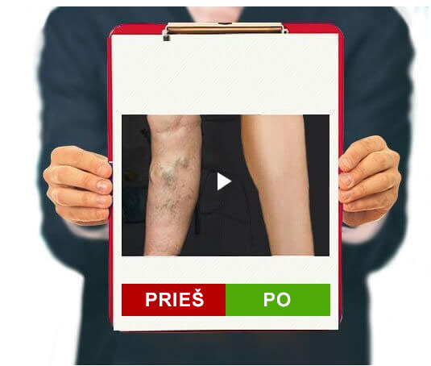
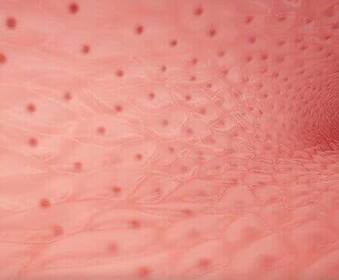
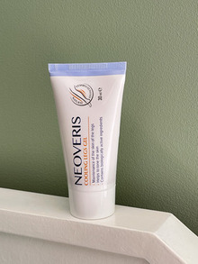

Rūpestingai elkitės su savo kojomis ir pasakykite „ne“ venų varikozei
NEPRIKLAUSOMAS BANDYMAS
Sveiki visi! Merginos, ar jūs kada nors pagavote save galvojant, kad jums gaila vyresnių nei 40 metų moterų, kurios vos eina šaligatviu ir gąsdina visus savo mėlynomis kojomis? Man dvigubai baisu į
jas žiūrėti, nes iš pirmų lūpų žinau, kad gyvenimas su varikoze yra skausmingas! Būtent todėl noriu pasidalinti, kaip galima kartą ir visiems laikams atsikratyti venų varikozės.
Pirmiausia blogos naujienos: venų varikozė dažniausiai yra paveldima, todėl jei kas nors iš jūsų šeimos narių serga šia liga, jums gresia pavojus. Dabar geros žinios: aš žinau, kaip jos atsikratyti.
Taip atrodė mano šlaunys, kai man buvo 14 metų. Taip, kai buvau paauglė, pradėjau pastebėti, kad mano kojos greitai „mėlynuoja“. Tie bauginantys kraujagyslių tinkleliai ir mėlynos išsiplėtusių venų
kreivės. Gėdijausi savo lieknų, atletiškų kojų, slėpiau jas džinsuose. Mama pasakė, kad tai hormonai ir greitai praeis. Tačiau kiekvienais metais kraujagyslių tinklas vis didėjo ir didėjo, kol apėmė
visas mano šlaunis.
Daugelis žmonių mano, kad venų varikozė – tik estetinė problema, todėl nieko nedaro, kad sustabdytų ligos progresavimą, o slepia pažeistas kūno vietas po drabužiais.
Trombozė
Kraujagyslės išsiplėtusios ir aiškiai išsikišusios po oda
Odos paviršiaus pažeidimas sukelia stiprų kraujavimą
Trofinė opa atsiranda dėl problemų, susijusių su kraujotaka ir netinkama audinių mityba.
Tačiau jei tik tai! Naktį man skaudėjo kojas, jos buvo nutirpusios, patinusios ir karštos. Ir taip diena po dienos... Stengiausi kiek galėdama palengvinti situaciją. Kasdien dariau pėdų voneles,
vartojau venotonikus, naudojau specialų gelį, mūvėjau kompresines kojines. Tačiau niekas nepadėjo. Man nepatiko žiūrėti į savo kojas. Kiekvieną dieną mano venos didėjo.
Po daugybės nesėkmingų bandymų susidoroti su venų varikoze visiškai praradau viltį. Tačiau sprendimas atėjo iš ten, iš kur nesitikėjau.
- ŠIUOLAIKINIS SPRENDIMAS
Dauguma produktų šiandien gali tik palengvinti venų varikozės simptomus, pašalinti patinimą ir sumažinti skausmą.
PRIEŠINGAI NEI JIE,PASIŽYMI PLAČIU VEIKIMO SPEKTRU
1. Padeda palengvinti kraujagyslių uždegimą ir su juo susijusius simptomus.
2. Padeda stimuliuoti kraujotaką ir stiprinti kraujagyslių sieneles.
Aš atostogavau ir paprašiau naujosios vadybininkės atnešti ataskaitą iš biuro į mano namus. Ji netyčia pastebėjo mano kojas po chalatu ir pasakė, kad prieš mėnesį mamai nupirko
gelį nuo venų varikozės, kuris jai padėjo vos per 2 savaites. Aš taip pat nusprendžiau išbandyti šį gelį ir užsisakiau jį internetu. Užsakymas
atėjo gana greitai, vos per 2 dienas.
Dėl savo tekstūros gelis yra labai švelnus ir maloniai kvepia. Jis gana lengvas, gerai tepasi ant odos. Gelis galutinai įsigeria per 5 minutes, nepalikdamas lipnumo ir nesudarydamas nemalonios
plėvelės.
Tepiau ryte ir vakare. Naudojamas saikingai, efektui išgauti pakanka plono sluoksnio.
Ir turi poveikį. Pirmasis pojūtis - nuovargis ir sunkumas kojose išnyksta beveik iš karto, tai yra azijinės centelės ekstrakto poveikis. Patinimas išnyksta tiesiog akyse. Atsiranda šviežumo pojūtis,
kojos tampa šviesesnės dėl sudėtyje esančių arklio kaštonų.
Nepatikėsite, bet kitą dieną pajutau malonų lengvumą, kojos netino iki pat vakaro. Anksčiau darbe mano kulkšnys akimirksniu patindavo, o dabar net venos nėra tokios patinusios. Aš ir toliau naudojau
gelį kiekvieną dieną. Ir žinote, ką? Po kelių savaičių pamiršau apie kojų skausmą, ėmė šviesėti kraujagyslių tinklas. Po mėnesio nebeatpažinau savo kojų. Nuo išsiplėtusių venų beveik nieko nebeliko. O
raudonos ir mėlynos tinklelio ant šlaunų lyg ir nebuvo. Nesitikėjau tokio rezultato. pasirodė esąs tikrai geras ir, svarbiausia, nebrangus
sprendimas.
AKIVAIZDUS POVEIKIS
1.Padeda pagerinti kraujagyslių būklę ir kraujotaką. veikia mikrocirkuliaciją organizme, stiprina kapiliarus ir mažina jų pralaidumą.
2.Padeda sumažinti kraujagyslių sienelių uždegimą, kraujagyslės tampa daug mažiau pastebimos po oda.
Dėl to atkuriama kraujotaka ir taip skatinamas širdies, smegenų ir žarnyno darbas.

PriešPo
Gelio sudėtyje esantys natūralūs ekstraktai padeda gerinti kraujotaką. Taigi, gelis ne tik padeda pašalinti venų mėlynumą, bet ir padeda išvengti problemos atsiradimo ateityje. Per mėnesį, kai naudoju
gelį, atsikračiau visų venų varikozės požymių. Negaliu apsakyti, kokia esu laiminga, kad galiu grožėtis savo lieknomis ir gražiomis kojomis. Tai neapsakomas jausmas! Tiesiog patys įvertinkite
skirtumą:
Pagaliau nustojau slėpti kojas po ilgais sijonais ir kelnėmis ir mielai dėviu mini. Jei jums pažįstamas sunkių kojų, patinimų, siaubingai išsikišusių venų jausmas ir nebežinote, kaip jų atsikratyti,
išbandykite . Tai tarsi korekcinės kojinės, tik geriau. Rūpinkitės savo kojomis ir jos tikrai pasakys jums „ačiū“.
EFEKTAS,
ŽINGSNIS PO ŽINGSNIO:
1. PAGERĖJUSI KRAUJOTAKA
Varikozinių venų vystymąsi lydi kraujotakos pažeidimas, dėl kurio susidaro kraujo krešuliai. Iš esmės kraujotaka vyksta iš apačios į viršų, nuo pėdų iki krūtinės. Stazės atveju
didžioji dalis kraujo lieka apatinėse galūnėse. padeda normalizuoti kraujotaką, apsaugo kraujagysles nuo krešulių susidarymo ir aprūpina jas maisto medžiagomis.
2.VENŲ SIENELIŲ STRUKTŪROS STIPRINIMAS
Sergant kraujagyslių ligomis, susilpnėja kraujagyslių vidinio sluoksnio ląstelės, plonėja sienelės.
Gelio sudedamosios dalys padeda sustiprinti endotelio sluoksnį, o kraujagyslės tampa stabilesnės ir elastingesnės. Gelis teigiamai veikia venų sieneles.

3. SKAUSMO IR DISKOMFORTO PAŠALINIMAS
Venų patinimas ir uždegimai, kuriuose užsistoja kraujas ir tromboziniai krešuliai, neabejotinai kelia diskomfortą ir blogina gyvenimo kokybę.
Gelis ne tik veikia skausmo priežastį, o tai turi teigiamą ilgalaikį poveikį, bet ir suteikia palengvėjimą dėl kaštono, centelės, pelžiedės ekstraktų.
Komentarai 10
Viltė
Tai bent rezultatas! Niekada nebūčiau pagalvojusi, kad vien tik gelis gali taip pakeisti mano kojas. 😊
Agnė
Aš taip pat turiu labai stiprią venų varikozę, užsisakysiu ir šį gelį, tikiuosi padės!
Elena
Dirbu padavėja kavinėje. Visą dieną negaliu prisėsti, antraip iš karto gausiu baudą. Per pamainą kojos patinsta ir skauda. O tada atsiranda mazgai... Iš pradžių aš, kaip ir visi, vaistinėje pirkau įvairių
gelių, tablečių ir žolelių vonelėms. Tačiau niekas nepadėjo. Netrukus sužinojau apie . Jo kaina prieinama ir daug veiksmingesnis nei bet kas kitas, ką
bandžiau. Nemanau, kad būčiau ilgai išsilaikęs šiame darbe, jei ne šis gelis. Anksčiau mano kojos būdavo tarsi pripildytos švino, bet dabar visai nepavargstu. Skirtumas daugiau nei pastebimas!

Laima
Nejaugi toks veiksmingas gelis? Aš net negaliu tuo patikėti...
Dorotėja
Aš taip pat netikėjau, kol neišbandžiau. Prieš 3 metus turėjau problemų su kojomis: tinimas, patinusios venos, deginimas ir sunkumas. Išbandžiau įvairius dalykus, maniau, kad niekas nepadės. Bet neseniai
gydytoja man patarė naujovę, pasakė, kad turėtų padėti. Ir per mėnesį mane išgelbėjo nuo visų problemų. Sunkumas, patinimas ir išsikišusios mėlynos venos
išnyko. Aš rekomenduoju tai!
Amanda
Koks rezultatas! reikia irgi išbandyti
Cecilė
Apie šį gelį išgirdau iš draugės, bet jai nepadėjo. Užsisakė internetinėje parduotuvėje.
Kornelija
Žinai, ji tikriausiai tiesiog užsisakė padirbtą gelį. Aš pati ilgai ir rimtai sergu venų varikoze, su mazgeliais, patinusiomis venomis, o kai pradėjo kamuoti kojų tinimas, išbandžiau šį gelį! Nuo tada jis yra
nuolatinis mano palydovas. Kelyje ir namuose. Tikrai greitai padeda. Taigi aš rekomenduoju, originalus
atrodo taip.
Paulina
Labai ačiū už komentarus. Mano venos mane vargina jau daugelį metų, tikrai išbandysiu šį gelį.
Nijolė
20.12.2022
Naudoju vos savaitę ir kojos mažiau tinsta per dieną, nebeskauda vaikštant. Net kraujagyslių tinklelis tapo mažiau pastebimas. Tikiuosi netrukus pamiršti
venų varikozę, kaip blogą sapną.


 40
40
Komentarai 10
GRAŽIOS KOJOS DABAR YRA REALYBĖ